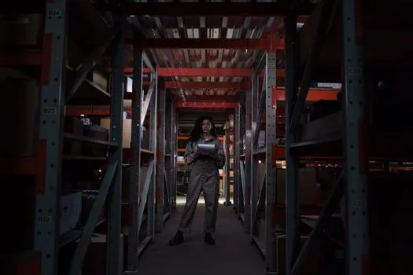
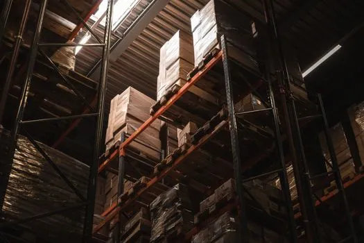
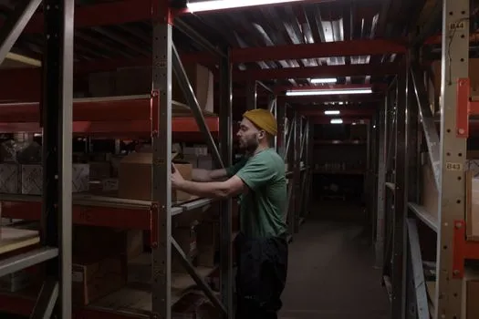
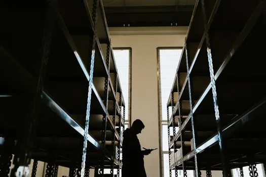

7018645Warehouse worker standing tall among industrial shelves, holding a clipboard in dim lighting.

7018645Warehouse worker standing tall among industrial shelves, holding a clipboard in dim lighting.

27111449Interior view of a warehouse with stacked cardboard boxes on high shelves, showcasing storage and logistics.

7019210A man in a beanie and green shirt arranging boxes on shelves in a dimly lit warehouse storeroom.

12234108Backlit silhouette of a person holding a clipboard in a warehouse aisle in Curitiba, Brazil.